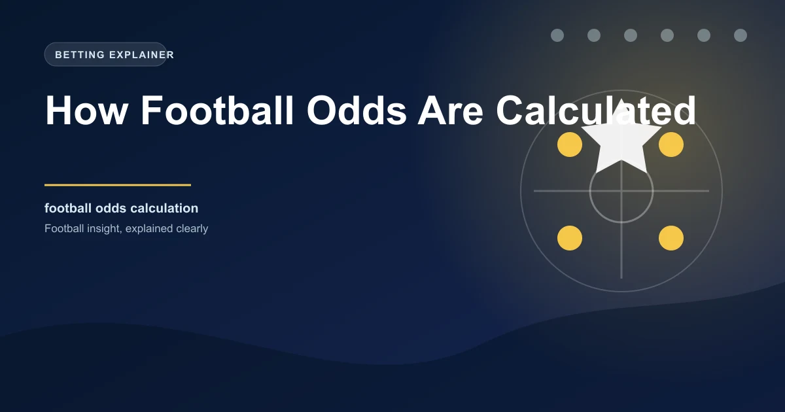

Every football betting market starts with odds, and those odds are not random numbers. Behind every price you see on a bookmaker's site is a process that begins with probability assessment and ends with a margin that guarantees the bookmaker profit over time. Understanding how football odds are calculated gives you a significant advantage because it reveals where value exists and where the market is working against you.
This guide breaks down the entire process, from raw probability to the final odds displayed on your screen. Once you understand the mechanics, you will never look at a set of football odds the same way again.
Every odds calculation begins with an estimate of how likely each outcome is. Bookmakers employ teams of traders, statisticians, and analysts who assess each match using a combination of data, models, and human judgment.
The core inputs for probability estimation include:
The output of this analysis is a set of probabilities for each possible outcome. For a standard 1X2 market, the analyst might determine that Team A has a 55% chance of winning, there is a 25% chance of a draw, and Team B has a 20% chance of winning.
Once the probabilities are established, converting them to decimal odds is a simple mathematical operation. The formula is:
Decimal Odds = 1 ÷ Probability
Using our example:
These are called "true odds" or "fair odds" because they reflect the actual probability without any bookmaker margin added. If you could bet at these exact odds, the expected value of every bet would be zero. Over time, you would neither win nor lose money. This is the baseline from which all bookmaker odds are derived.
This is where bookmakers make their money. Instead of offering odds that perfectly reflect the probability, they reduce each odds price slightly. This creates an overround, also known as the margin or vig, which ensures that the total implied probability across all outcomes exceeds 100%.
True probabilities: 55% + 25% + 20% = 100%
After margin adjustment:
Total implied probability: 57.75% + 26.25% + 21.00% = 105%
The 5% overround is the bookmaker's built-in profit margin.
The margin varies by bookmaker and by market. Competitive markets like the Premier League 1X2 might carry margins of 3-5%, while more obscure markets like lower-league corners might carry margins of 8-12%. The higher the margin, the harder it is for bettors to find value.
You can calculate the bookmaker's margin on any market using a simple formula. Take the implied probability of each outcome (1 divided by the odds) and add them together. The amount by which the total exceeds 100% is the margin.
Odds: Team A 1.85, Draw 3.60, Team B 4.20
Understanding margin is critical because it directly affects your potential returns. Two bookmakers might offer odds of 1.90 and 1.85 on the same selection, but if the second bookmaker has lower margins on other selections in the same market, their overall odds package might still be better value.
Bookmaker odds are not static. They move in response to several factors, and understanding these movements can help you time your bets better.
Because different bookmakers use different models and margins, the same match can have noticeably different odds across platforms. Comparing odds across three or five bookmakers before placing a bet can add 5-10% to your returns over time. This single habit is one of the easiest ways to improve your betting profitability.
Modern bookmakers rely heavily on statistical models to set their odds. These models process thousands of data points and update probabilities in real time as new information becomes available. The most sophisticated models incorporate machine learning, adjusting their weightings based on how well different factors have predicted outcomes historically.
However, models are not infallible. They are only as good as the data they are fed and the assumptions they make. This is where informed bettors can find an edge. If you believe a model is overweighting recent form and underweighting tactical matchups, or if you have access to information that the model has not yet incorporated, you can identify odds that do not accurately reflect the true probability.
Odds can be expressed in different formats, but they all represent the same underlying probability. Understanding the conversions between formats helps you compare odds across international bookmakers.
| Decimal | Fractional | American | Implied Probability |
|---|---|---|---|
| 1.50 | 1/2 | -200 | 66.67% |
| 2.00 | 1/1 | +100 | 50.00% |
| 3.00 | 2/1 | +200 | 33.33% |
| 4.00 | 3/1 | +300 | 25.00% |
| 5.00 | 4/1 | +400 | 20.00% |
Decimal odds are the most common format used by European bookmakers and are the easiest to work with for calculating returns. Simply multiply your stake by the decimal odds to get your total return.
Understanding odds calculation transforms you from a passive price-taker into an active value-seeker. When you know that odds are simply expressed probabilities with a margin added, you can reverse-engineer any odds price to find the implied probability and compare it to your own assessment.
If you believe a team has a 50% chance of winning but the odds imply only a 45% chance, you have identified a value bet. If the odds imply a 55% chance and your analysis says 50%, the bet offers negative value and should be avoided. This framework for evaluating every bet is the foundation of profitable betting.
Compare our AI-powered predictions against the market odds to identify value across today's fixtures.
 Win
Win